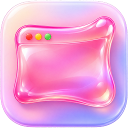
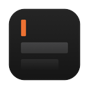
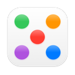
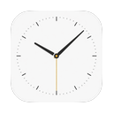

Better way to switch
windows on Mac
Download for Mac
Free · No in-app purchases
Click for sound
0:00
The problem
1:38
All your windows
2:01
Snap to any window
2:40
Settings
Apps designed by
Yaosamo

Nothing
A quiet place to write. Mac and iPhone

Dots & Clouds
Six small, playful tools for your Mac

Time
A timezone clock for your Mac
drag this thing